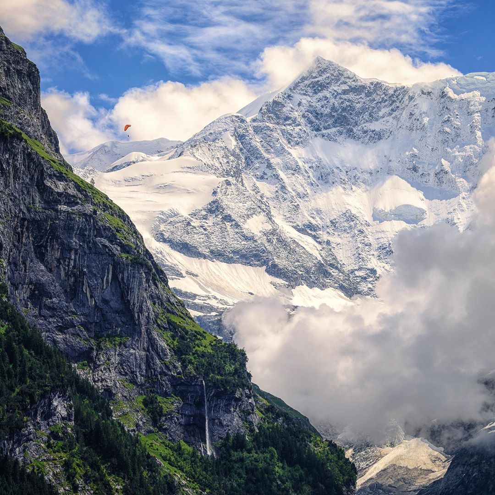

Nature

What is Nature
? Is it such as wild planet full of plants?
A planet with freedom life? Or anything else? Refers to Wikipedia,
The words nature are used for all the things that are normally not made by
humans.
Things like weather, organisms, landforms, celestial bodies and much more are part of
nature.
But, the word nature I mean is a container of life that has beauty and in it's
contained
with various living things.
As you can see at the picture above. That's so beautiful, isn't it? We all know that the nature isn't made by us. However, we have to conserve the nature with full of love so that we won't damage it. Also, with the preservation of nature, our survival will be safe in the future.